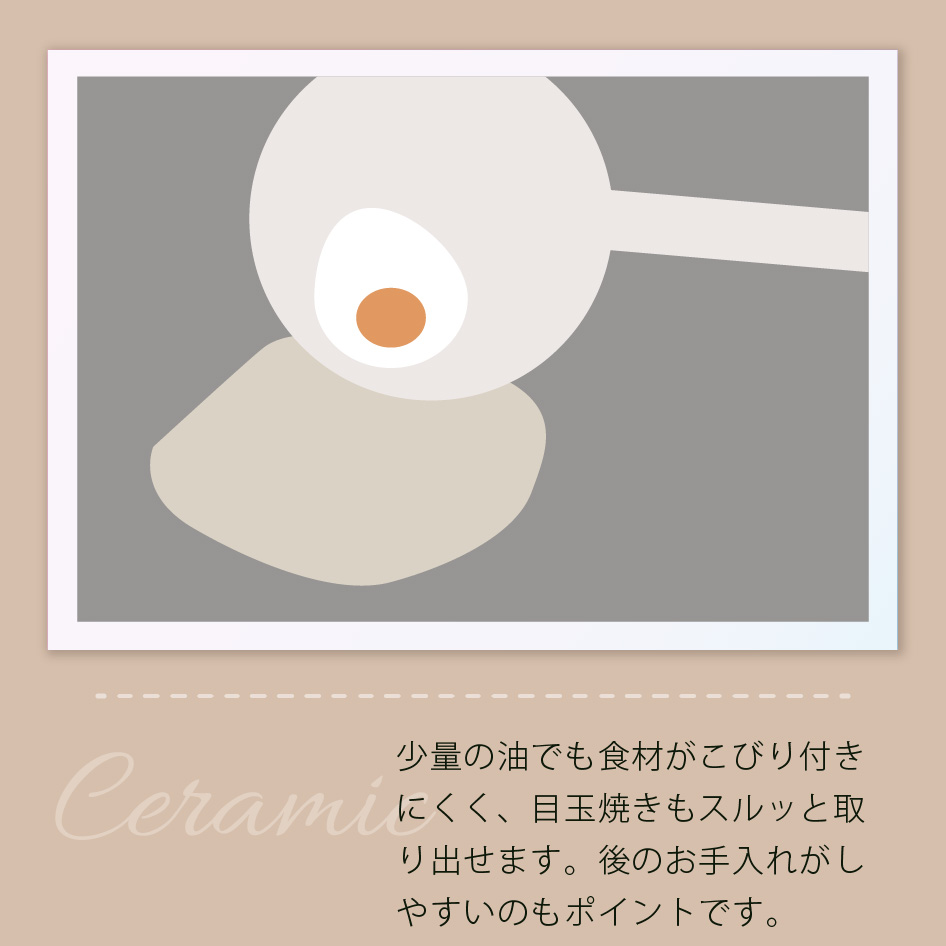
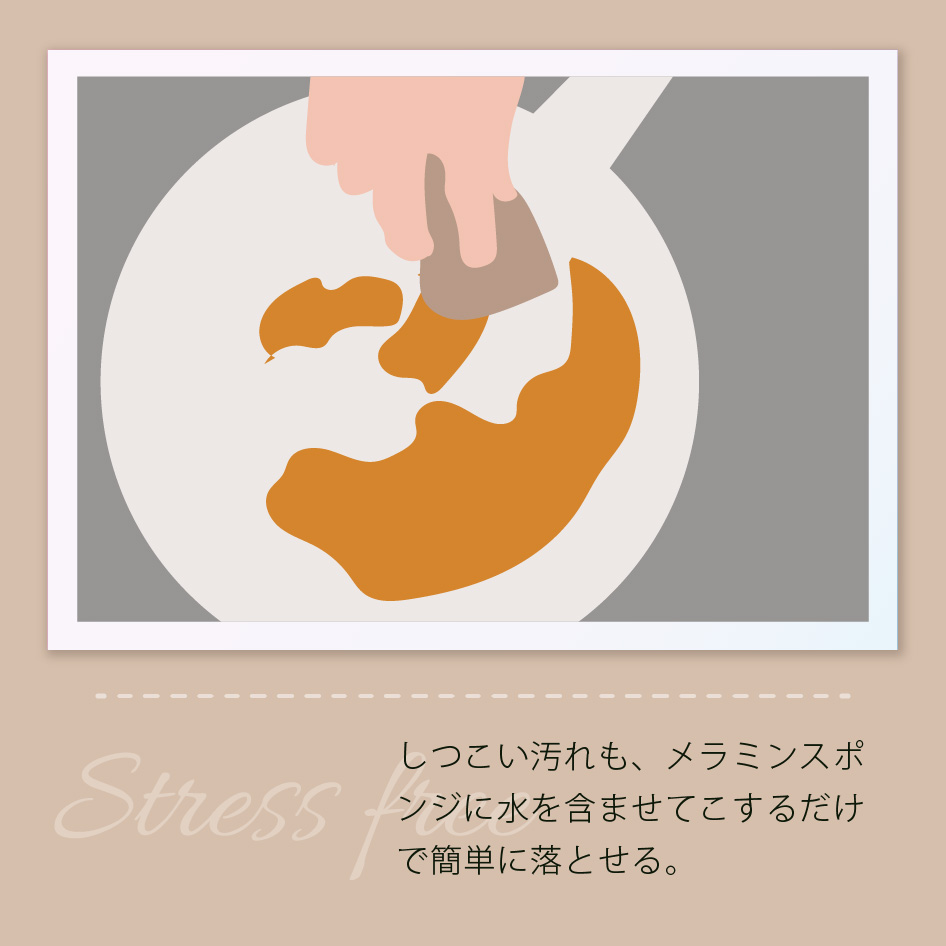
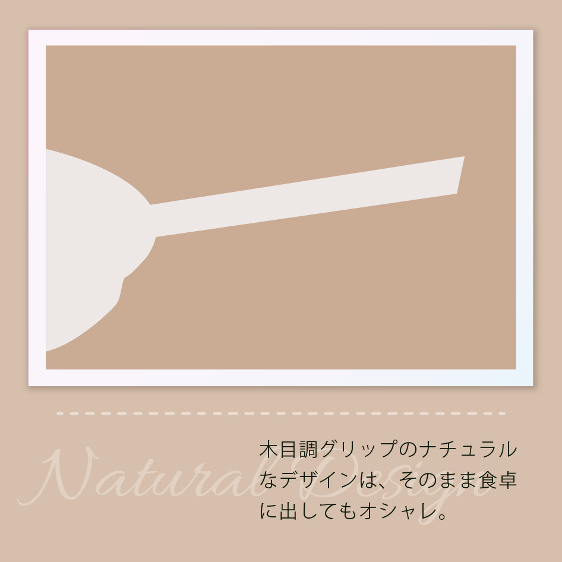
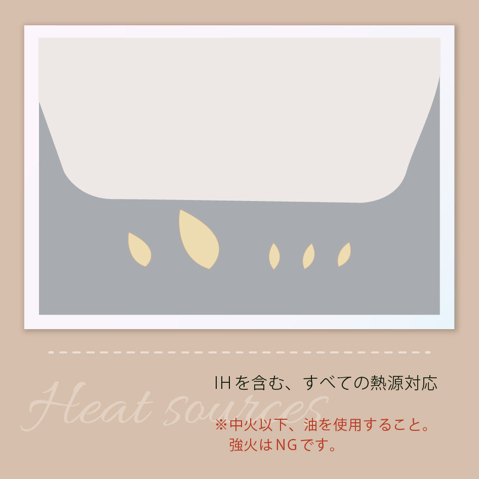
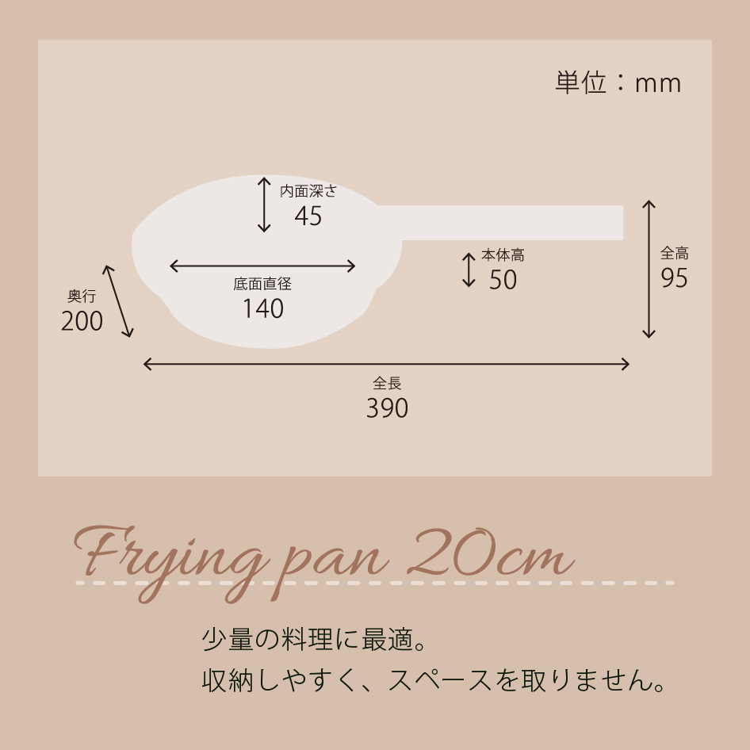
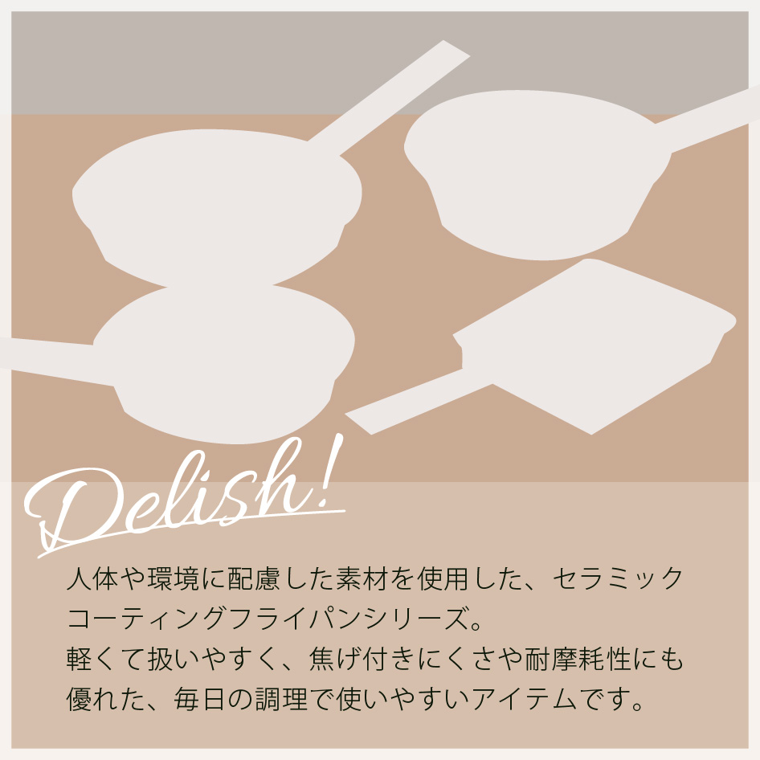
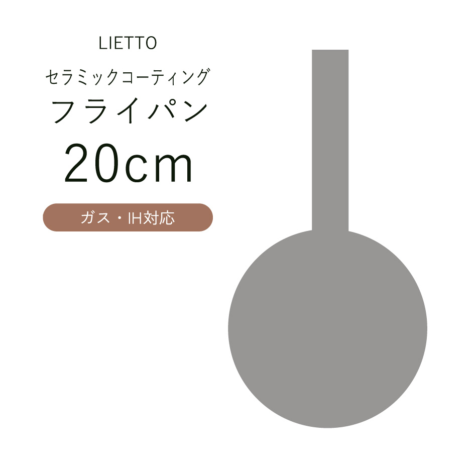

「料理をもっと身近に」をコンセプトに、毎日の料理に対する「面倒」「大変」といった印象を和らげ、手軽さや楽しさが伝わる商品ページを制作しました。

IHを含む、全ての熱源に対応。
焦げ付きにくい6層のセラミックコーティング。





| KICHEN WEAR A | |
|---|---|
| サイズ |
全長390×奥200×全高95(本体高50)mm 底面径:直径140mm 内面深さ:45mm |
| 重量 | 400g |
| 材質 |
本体：アルミニウム合金（セラミックコーティング） 外部底部：ステンレス鋼 ハンドル：フェノール樹脂（耐熱温度180℃） |
| 熱源対応 |
IHを含む、全ての熱源対応 ※中火以下、油を使用すること。 ※強火はNGです。 |
| 特徴 |
人体や環境に配慮した素材を使用した、セラミックコーティングフライパン。 軽量で扱いやすく、焦げ付きにくさや耐摩耗性に優れた、毎日の調理に活躍するアイテムです。 温かみのある木目調グリップを採用し、キッチンだけでなく食卓にも馴染むナチュラルなデザインに仕上げました。 6層のセラミックコーティングにより、少量の油でも食材がこびり付きにくく、調理後のお手入れも簡単。毎日の料理を快適にサポートします。 |
| ご注意事項 | 商品ページ内の写真に写っている小物は商品には含まれません |

IHを含む、全ての熱源に対応。
焦げ付きにくい6層のセラミックコーティング。
| サイズ |
全長390×奥200×全高95(本体高50)mm 底面径:直径140mm 内面深さ:45mm |
|---|---|
| 重量 | 400g |
| 材質 |
本体：アルミニウム合金（セラミックコーティング） 外部底部：ステンレス鋼 ハンドル：フェノール樹脂（耐熱温度180℃） |
| 熱源対応 |
IHを含む、全ての熱源対応 ※中火以下、油を使用すること。 ※強火はNGです。 |
| 特徴 |
人体や環境に配慮した素材を使用した、セラミックコーティングフライパン。 軽量で扱いやすく、焦げ付きにくさや耐摩耗性に優れた、毎日の調理に活躍するアイテムです。 温かみのある木目調グリップを採用し、キッチンだけでなく食卓にも馴染むナチュラルなデザインに仕上げました。 6層のセラミックコーティングにより、少量の油でも食材がこびり付きにくく、調理後のお手入れも簡単。毎日の料理を快適にサポートします。 |
| ご注意事項 | 商品ページ内の写真に写っている小物は商品には含まれません。 |